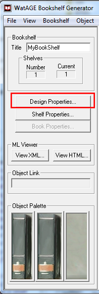
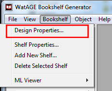
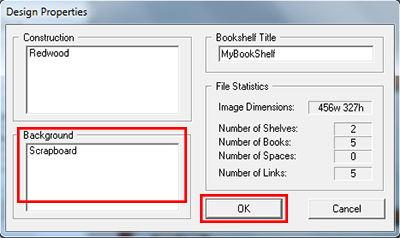

> Getting Started with Bookshelf Editor >
Assigning design properties >
View the Background
4.3.3. View the Background
To view the background:
- Do one of the following:
- From the Tool Panel, click Design Properties.
- From the Bookshelf menu, click Design Properties.
- From the Tool Panel, click Design Properties.
- In the Design Properties dialog box, view the Background of the bookshelf.